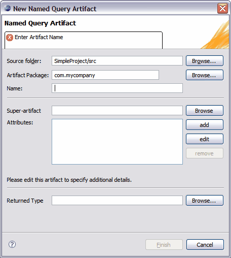

You can create and edit Named Query Artifacts through the New Named Query Artifact wizard. This section details the New Named Query Artifact wizard and explains how to edit your artifacts using the Tigerstripe Workbench entity perspective.
The New Named Query Artifact wizard allows you to create a new named query artifact with a Tigerstripe project. Complete the following procedure to open the New Named Query Artifact wizard.
To open the New Named Query Artifact wizard and create your first named query artifact
- Ensure that the Tigerstripe Perspective is active. For more information, refer to Tigerstripe Perspective.
- Click Tigerstripe, select New, and click Named Query. Alternatively, you can select the Named Query icon on the Tigerstripe toolbar (). The New Named Query Artifact wizard appears.
- Enter a name for the named query artifact in the Name text box and click Finish.

As with other types of Tigerstripe artifact wizards, the New Named Query Artifact wizard requires that you enter a set of parameters before you can successfully create your notification artifact. The following outlines the information available on the New Named Query Artifact wizard.
- Source Project: the source project in which the named query artifact is being created. In most cases, Tigerstripe is able to pre-populate this field based on the context. If not populated, or if the wrong project was selected, click Browse to select the correct Tigerstripe project in which the artifact is to be created.
- Artifact Package: each artifact is created within the scope of a package. This field must contain a valid package name. The New Named Query Artifact wizard will reject all invalid package names.
- Artifact Name: a valid name for the artifact. This name uniquely identifies the artifact within the package. The New Named Query Artifact wizard will reject all invalid artifact names.
Optionally, you can specify the fully qualified name of the returned entity type in the Returned Type text box on the New Named Query Artifact wizard. If not specified, the wizard will return an error in the project. The target entity type must be specified on all named query artifacts before successfully generating a project.
 Editing New Named Query Artifacts
Editing New Named Query Artifacts

© copyright 2005, 2006, 2007 Cisco Systems, Inc. - All rights reserved